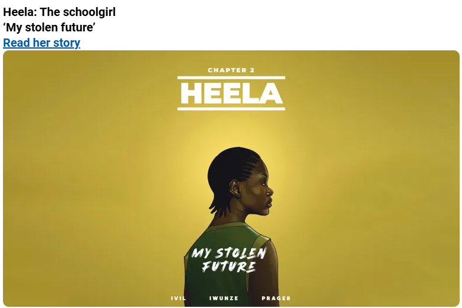

The story of Heela: My Stolen Future really stuck with me because it shows how digital media can be used to tell powerful, real life experiences in a way that feels personal and emotional. Instead of just reading facts about violence or hardship, we actually see Heela’s perspective, which makes it much more impactful. One of the main themes I noticed is resilience. Even after going through something extremely traumatic, Heela does not let that define her whole life. She chooses to speak up, report what happened, and continue pursuing her goals. This connects to the idea of agency because Heela is trying to take control of her future even after power was taken away from her.
Another important idea in this story is representation in digital media. Stories like Heela’s are not always shown in mainstream media, especially stories about young girls in vulnerable communities. This graphic story gives her a voice and makes her experience visible to a larger audience. It also shows how media can bring attention to real world problems and resources. The Rainbo Center is a great example of this because it helps people who faced similar situations and need care, examinations, and support. This shows that media is not only about entertainment. It can also spread awareness and connect people to help.
The style of this story is also very effective because it is made like a graphic novel. This helps the story get straight to the point while still showing images for each situation, almost like a comic book. The visuals make the story easier to follow and more emotional because we can see Heela’s expressions, surroundings, and important moments in her life. This connects to multimodality because the meaning comes from both the words and the images together. The images communicate feelings that would be harder to understand through text alone.
Heela’s story is empowering because she still wanted to become a nurse after everything she went through. That shows her will to survive and work for her village, especially because Ebola was a major problem in her community. Instead of only being shown as a victim, she is shown as a person with goals, strength, and purpose. This is important because it reminds the audience that people who go through trauma still have dreams and futures. Her story is sad, but it is also inspiring because she keeps moving forward.
The cover design is really effective too. Her name is at the top in a bold font, which guides your eyes to it right away. This emphasizes her importance as a person and shows that the whole story is about her life. The words on her back also guide the viewer toward her character image. The words are faintly drawn, but that actually makes them more interesting because it makes you focus and try to understand what they say. The way she is placed alone in the center creates a feeling of isolation, but also power. It shows that this is fully her story and that her experience has deep meaning.
Overall, Heela: My Stolen Future shows how digital storytelling can be used to talk about serious issues in a personal and emotional way. The graphic novel format makes the story easier to connect with, while the themes of survival, representation, and hope make it meaningful. Heela’s story is painful, but it also shows strength and the importance of fighting for a future.